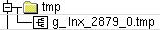
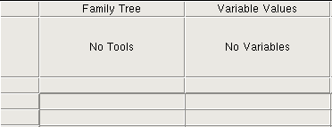
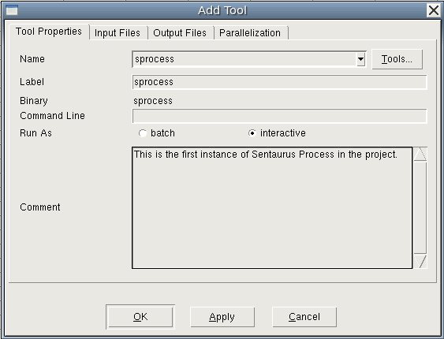
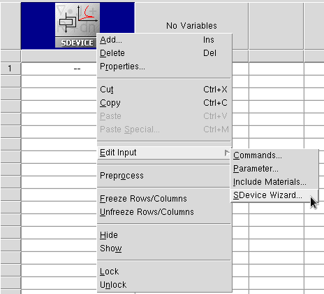
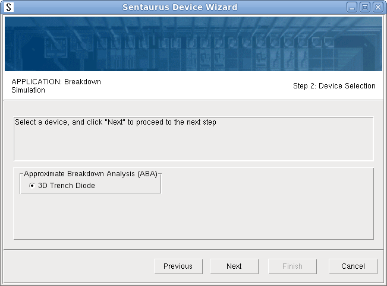
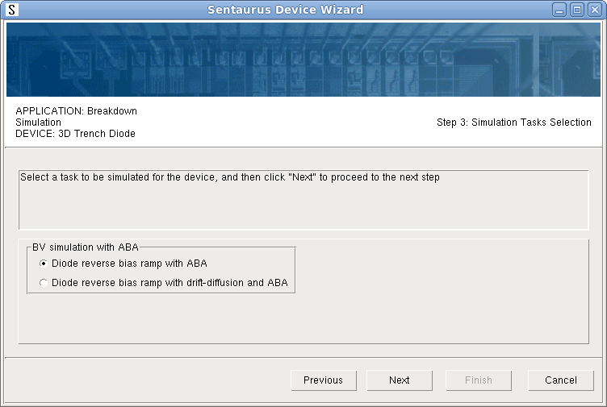
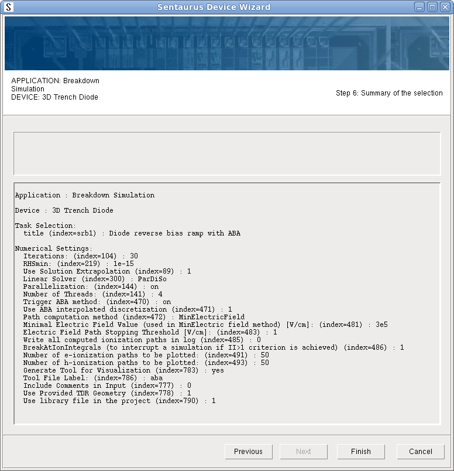
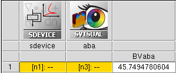

Sentaurus Workbench
3. Creating Projects
3.1 Setting Up the Tool Flow
3.2 Saving Projects
3.3 Using the Sentaurus Device Wizard
3.4 Setting Up Parallel Processing
Objectives
- To set up and save a new Sentaurus Workbench project.
3.1 Setting Up the Tool Flow
The first step to setting up a tool flow is to create a project.
To create a project, do one of the following:
- Choose Project > New and then select either Traditional Project or Hierarchical Project (see Section 1.4 Project Structure: Traditional and Hierarchical Organizations for details).
- Click the toolbar button.
This creates a temporary project with a name similar to g_lnx_2879_0.tmp in the tmp folder that can be viewed in the projects browser (see Figure 1).

Figure 1. Project directory showing project folder.
To set up a tool flow, under the Family Tree, right-click the No Tools node (see Figure 2) and choose Add.

Figure 2. Detail of Project tab showing Family Tree.
The Add Tool (or Tool Properties) dialog box opens (see Figure 3).

Figure 3. Add Tool dialog box when adding first tool to the flow.
The Label is the name by which this instance of Sentaurus Process is referred. You can use any unique name you want. If you use multiple instances of Sentaurus Process in a project, then each instance must have a unique label, for example, sprocess1 and sprocess2. The Input Files and Output Files tabs list all files associated with the tool for reference.
If you want to return to the Tool Properties dialog box for a tool you have already created, then double-click the tool icon.
Now, the command file for this tool must be created. Right-click the Sentaurus Process tool icon and choose Edit Input > Commands. The text editor (gedit by default) opens for you to enter commands.
To customize the text editor used for editing input files, see Section 5.2 Changing the Default Text Editor.
Next, add the following lines to the Sentaurus Process command file with the text editor:
Grid2D select silicon name=Boron z=1e15 store implant phosphorus dose=5e14 energy=40 diffuse time=20 temperature=900 struct tdr=n@node@ !Gas !interfaces
Save the sprocess_fps.cmd command file and close the text editor.
In the next sections, you might want to add some extra tools to the flow (usually, Sentaurus Structure Editor, or Sentaurus Device, or both, followed by Sentaurus Visual).
3.2 Saving Projects
Before running the project, you must save it.
To save a project:
- Choose Project > Save As > Project.
- Navigate to where you want to save the project under $STDB.
- Save the project as parameters_scenarios.
You can now run the project as described in Section 2.3 Running Projects. There is only one node to run for this project.
3.3 Using the Sentaurus Device Wizard
The Sentaurus Device Wizard offers custom solutions for Sentaurus Device input generation, followed by visualization of results and parameter extraction with Sentaurus Visual.
Its purpose is to help TCAD users to:
- Mitigate the rigidity of the constructions of the Sentaurus Device input language, and make it easier for beginners to use
- Provide ready-to-go application examples for most frequently used TCAD applications
- Reduce the overall complexity of setting up a device simulation flow in Sentaurus Workbench
The Sentaurus Device Wizard consists of two parts:
- The graphical user interface (GUI)
- The library of examples. Examples are grouped by applications, where each application group typically represents either certain device functionality (such as power, wide bandgap, and memory devices) or different simulation techniques (such as degradation, radiation, noise, and variability). Each example is already equipped with the corresponding TDR geometry, which is referred to in the corresponding Grid input statement (see Section 1.2.1 File Section).
To create an input command file for Sentaurus Device:
- Create a new project and add the Sentaurus Device tool in it.
- Choose Tool > Edit Input, or
right-click the Sentaurus Device tool icon and choose Edit Input > SDevice Wizard.

The Sentaurus Device Wizard opens.
The following chart shows the operational scenario of the wizard, where you make several selections and enter your input as required. Some selections such as Physical Models and Numerical Setting can be omitted. - Select an application.
Under Special Technique Demonstrators, select Breakdown Simulation.
- Click Next.
- Select a device (only one device is available for this application).
The options available depend on the application previously selected.

- Click Next.
- Select a simulation task.
Two tasks are available for the selected device. Select Diode reverse bias ramp with ABA.

- Click Next.
- Select the numeric control parameter values and other controls.
These options provide the possibility to generate commented input and select a tool name for the Sentaurus Visual tool instance.
- Click Next.
- At the end, review the selection summary, which shows all the chosen settings for the
selected simulation task including physical models and numeric parameters for the
selected device.

- Click Finish.
The wizard generates the input file for the selected simulation task and opens it in the text editor (see Figure 4). Your default text editor in Sentaurus Workbench is used (jEdit is shown as an example). If a file with a given name already exists, then you will be prompted to confirm whether you want to overwrite it before creating a new one.
{kind=link}
{kind=link}
{kind=link}
{kind=link}
Figure 4. Sentaurus Device command file as generated by Sentaurus Device Wizard. (Click image for full-size view.)
In addition to Sentaurus Device input generation, the Sentaurus Device Wizard creates the subsequent Sentaurus Visual tool instance with a given name and copies its predefined input to the project directory (see Figure 5). To be able to run a device simulation, all relevant files (meshed device structure, parameter file, and so on) are also generated inside the project.

Figure 5. Executed project, generated by using Sentaurus Device Wizard.
Finally, after executing the Sentaurus Device node, you can check the results in Sentaurus Visual (see Figure 6).
{kind=link}
Figure 6. Results of 3D diode simulation with ABA method. (Click image for full-size view.)
Now, you can replace the given device structure with your own device in the project and repeat the device simulation. Before you run it, ensure that all the given electrode names and bias conditions are appropriate for your device.
3.4 Setting Up Parallel Processing
Sentaurus Workbench supports parallel processing in a shared-memory multiprocessor environment, as well as message passing interface (MPI). This is especially important for 3D simulations, which require significant computation resources. To run simulations in parallel, special commands are available to instruct tools to use thread parallelism to accelerate the simulations (see Section 9.5 Parallelization).
Sentaurus Workbench automatically synchronizes the number of requested parallel slots between a simulation job and a scheduler. You need to decide on the required resources, such as the number of requested parallel slots (CPUs) and the amount of memory (RAM), before job execution. Sentaurus Workbench takes over this task and requests appropriate computational resources during job submission (this is done by default).
To configure parallel job execution, each tool has a corresponding Tool Properties dialog box where you can set up parallelization on the Parallelization tab of the dialog box (see Figure 7).
{kind=link}
Figure 7. Tool Properties dialog box showing Parallelization tab used to set up automatic CPU allocation for parallel computation. (Click image for full-size view.)
Copyright © 2022 Synopsys, Inc. All rights reserved.